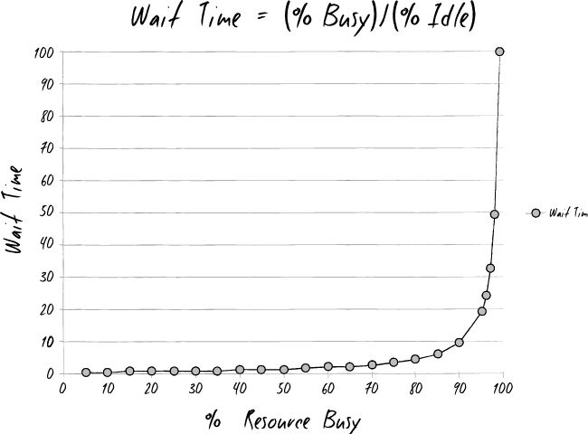

Optimising Software
Delivery with
Value Streams
Joe Schmetzer • @tumbarumba
Introduction
Question One
How do we make money?
A Value Stream
Types of Value Streams
Value Stream Tasks
A Value Stream in Detail
Value Stream Statistics
- 35 different activities
- 43 days lead time
- 7 days touch time
Question Two
Why does it take so long?
Single Task Analysis - Data
| % Busy | Wait Time |
|---|---|
| 0% | 0 |
| 50% | 1 |
| 75% | 3 |
| 90% | 9 |
| 95% | 19 |
| 99% | 99 |
Single Task Analysis - Graph
Little's Law
L = W
Linked Queues

Question Three
What is the Problem?
The Principles of Product Development Flow - 12 critical problems with the current product development orthodoxy
Optimising for flow, comparison of streams, cost of delay
Question Four
How do we change?
Toyota Kata
References
- Illumated Manuscript Arundel 155 (public domain)
- Lean Lego Red Brick Cancer
- Principles of Product Development Flow
- The Phoenix Principle
Joe Schmetzer • @tumbarumba